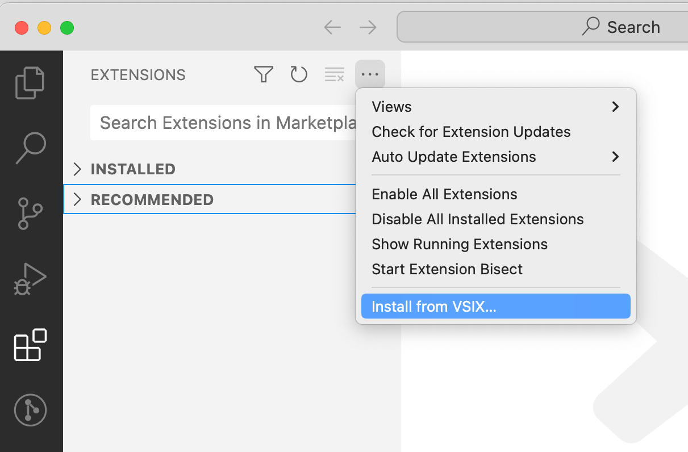

1.3 打包插件
本地开发并测试插件正常工作后，还需要打包分发给其他用户使用。要打包插件需要先安装 vsce 命令（Visual Studio Code Extensions首字母缩写）：
npm install -g @vscode/vsce
然后切换到插件目录对应的命令行环境，输入vsce package命令进行打包：
$ vsce package
ERROR It seems the README.md still contains template text. Make sure to edit the README.md file before you package or publish your extension.
第一次执行可能会提示README.md文件是模板内容需要更新，可以先删除生成的内容简单处理。更新README文件后重新执行打包命令：
$ vsce package
WARNING A 'repository' field is missing from the 'package.json' manifest file.
Do you want to continue? [y/N] y
WARNING LICENSE, LICENSE.md, or LICENSE.txt not found
Do you want to continue? [y/N] y
DONE Packaged: /Users/chai/vscode-extdev-book/examples/helloworld/helloworld-0.0.1.vsix (6 files, 2.6KB)
打包过程中还会检查仓库地址、版权文件等内容是否合规，这是是一个正规的插件发布到插件市场必须要提供的信息。为了简化流程这里先忽略这些警告信息。最终会生成打包后的 helloworld-0.0.1.vsix 插件文件。
vsix 是标准的 zip 压缩格式，其中打包的文件对应如下目录结构：
├── [Content_Types].xml
├── extension
│ ├── CHANGELOG.md
│ ├── README.md
│ ├── extension.js
│ └── package.json
└── extension.vsixmanifest
然后打开一个新的VS Code程序，在插件视图点击“Views and More Actions...”按钮，选择“Install from VSIX...”菜单：

安装成功后会弹出提示安装成功：

macOS和Linux 系统下安装的插件在 ${HOME}/.vscode/extensions 目录，Windows 则是 %USERPROFILE%\.vscode\extensions 目录，插件的产生的子命令名为 undefined_publisher.helloworld-0.0.1（没有指定publisher，所以用了默认的undefined_publisher）。
下面是插件安装之后的目录结构：
$ tree -a ${HOME}/.vscode/extensions/undefined_publisher.helloworld-0.0.1
├── .vsixmanifest
├── CHANGELOG.md
├── README.md
├── extension.js
└── package.json
0 directories, 5 files
可以发现安装后插件目录有一个.vsixmanifest包含插件的一些元信息，其他则是开发插件时的文件。
这样我们通过本地打包和手工方式安装使用开发的插件了。